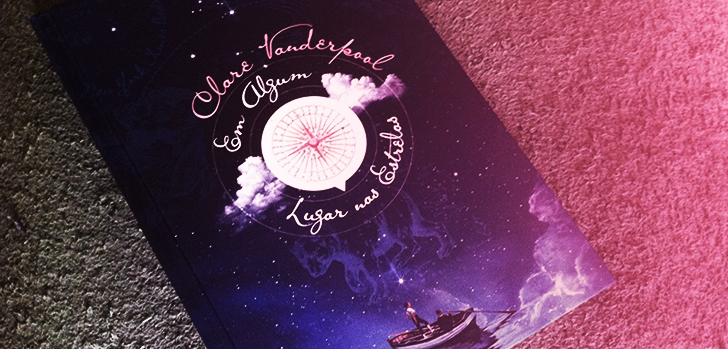
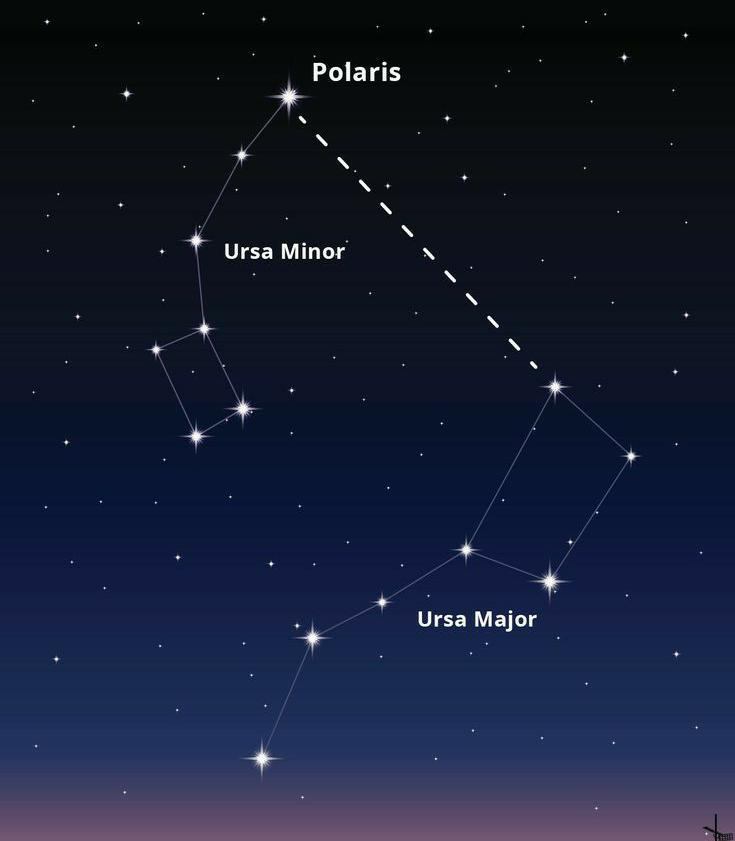

Resenha
A obra "Em algum lugar nas estrelas", autoral da Norte Americana Clare Vanderpool e publicada de forma inédita em 8 de Janeiro de 2013, é um romance que narra a história de dois garotos, Jack Baker e Early Auden em uma jornada de muitas aventuras e descobertas, dando enfoque em temáticas como Autismo, fantasiando situações diversas ao longo do livro em que Early, com a ajuda de "Jackie" (Como chamava sua mãe), partiram em busca de seu irmão mais velho, Fisher Auden, que estava na guerra a serviço militar e foi dado como morto pelo exército após ataques da oposição.
Através de metáforas e comparações com narrativas da história de pi, um garoto que estava à procura do seu lugar no mundo, perpassando piratas, baleias e vulcões em erupção, o enredo situa concisas pesquisas da própria autora em relação a Geografia do Maine, a construção de barcos e evidências matemáticas, como a "finitude do pi", contestado por Early ao decorrer do nosso livro.
A dinâmica da História de Pi

Pi era um garoto muito parecido a Early, ao que tudo indica, Pi estava diretamente relacionado às perspectivas de vida do garoto. E no enredo da obra, situações dotadas de fantasia e mistério fazem acontecer o que chamamos de "tirar as cortinas".
Além disso, a autora dirige a obra de encontro a uma atmosfera empírica, subjetiva e utópica sobre dilemas existenciais e comportamentais dos personagens.
Um exemplo impressionante é situado no episódio da história de Pi em que o mesmo se perde em um grande labirinto e ao dormir, acaba sendo despertado por uma velha anciã de longas tranças, cada uma trazendo um ano de vida.
Nesse contexto, a velha senhora leva Pi para sua cabana e presta sua hospitalidade e seus cuidados maternais, fazendo Pi pensar que aquele realmente era o seu lugar. Até que um dia, ao voltar do poço em que viu a grande Ursa maior rugir em sua direção, encontra a pobre velha acomodada em uma poltrona perto da lareira já despida de vida.
Não obstante, o garoto Early e Jackie encontram-se perdidos na trilha apalache e inesperadamente uma casa habitada por uma anciã de longos cabelos aparentemente chamando pelo seu filho Martin Johansen, que já havia morrido há muitos anos por um tiro de bala perdida prestada por Macscott, o "pirata" em uma disputa de tiro ao alvo.
A velha senhora, já com sua sanidade prejudicada pelos anos, avista Jackie e Early e os convida para entrar, questionando a Jackie por onde ele tinha andado por tanto tempo, como se ele fosse de fato Martin Johansen, seu filho.
Então eles se acomodam na velha cabana e ali ficam por um bom tempo até decidirem partir novamente rumo a grande Ursa da Trilha apalache, tão comentada pela National Geographic.
No fim da obra, Pi chega até as catacumbas das almas perdidas, onde começa a se sentir como uma delas em um devaneio bem articulado por Clare. A riqueza de detalhes que diferencia o sensível do inteligível é o que faz esse episódio ser marcante.
Quanto a Early e Jackie, acabam sendo encurralados por Macscott enquanto estão em fuga intensa tentando escalar uma pequena montanha.
Jackie é picado por uma cobra e acaba caindo montanha a baixo.
Nesse momento, a colossal Ursa da trilha Apalache entra em cena e com um rugido maternal de proteção faz o pirata covardemente se afastar.
Inesperadamente após esta cena, chega Fisher, irmão de Early, com aparência já envelhecida, e toma Jackie pelos braços, levando-o para a casa da Sra. Johansen, onde após alguns espasmos conseguiu se recuperar.
Nesse episódio ocorre uma transição da realidade para a ficção, onde a grande Ursa, caracterizada por Fisher, despede-se de Early quando estão conversando sozinhos.
Felizmente, no fim da obra, Fisher sai do seu estado de depressão pós-guerra e retoma sua vida normal.
Frases marcantes
"Pi entendia a necessidade de se apegar. De não abrir mão da própria dor. Ela havia se tornado parte dele. Quem seria sem essa dor?"
“É claro que eu não sabia como chegar a esses lugares, mas essa é a questão de estar perdido. Ter liberdade para ir a qualquer lugar, mas não saber onde fica lugar nenhum.”
Curiosidades
Uma curiosidade do livro é que ele foi criado através de dados científicos e ficcionais, uma vez que a autora precisou da ajuda de diversos outros profissionais para a desenvoltura da obra e da sua própria imaginação. Mas o que deu a consistência de fato ao renomado "em algum lugar nas estrelas" foi o seu caráter autêntico e transcendental, já que todas as pessoas, de todas as idades podem ler esse incrível trabalho de Clare Vanderpool, fazendo aflorar um sentimento de nostalgia e euforia ao mesmo tempo aos seus interlocutores que não cessam elogios para a autora.
Essa leitura atemporal, por fim, faz nos perceber o quão é primordial entender o outro, seus limites, suas fraquezas e suas fortalezas, seus desejos, medos e determinações para que possamos preservar, de fato, em nossas vidas, o maior valor que é a Amizade.